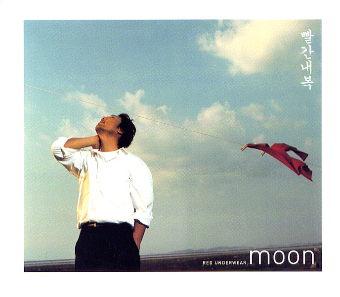

안녕하세요 라보엠입니다.
날씨가 갑자기 추워졌죠? 이럴 때 필요한건 뭐다? 바로 내복!
가을의 쌀쌀한 바람이 불어오면, 우리의 마음속에는 어느새 따뜻했던 과거의 기억들이 떠오르곤 합니다. 이런 감성을 완벽하게 담아낸 노래가 바로 이문세의 빨간 내복입니다. 2002년 10월 15일에 발매된 이 곡은, 발매 이후 20년이 넘는 시간이 흘렀음에도 여전히 많은 이들의 마음을 울리고 있습니다. 마침 지난주말 정지영의 오늘아침 라디오에서 이문세의 이곡이 흘러나와 오늘 소개해드리려고 합니다.

빨간 내복의 발표
이문세의 14집 앨범의 타이틀곡인 빨간 내복은 당시 한국 사회의 변화와 맞물려 큰 반향을 일으켰습니다. 급속한 경제 성장으로 물질적 풍요를 누리게 된 반면, 과거의 정겨움과 순수함을 그리워하는 사회적 정서를 잘 포착한 곡이라고 할 수 있습니다. 이 앨범 제작 당시 이문세는 성대 결절로 인해 목소리 사용에 어려움을 겪었습니다. 그럼에도 불구하고 그는 몇몇 곡의 작사, 작곡, 프로듀싱, 녹음까지 직접 참여하며 자신의 음악적 열정을 보여주었습니다.
노래의 의미와 가사
새빨간 내복을 입고
입 벌리며 잠든 예쁜 아이
낡은 양말 깁고 계신 엄마
창밖은 아직도 새하얀 겨울밤
한 손엔 누런 월급봉투
한 손엔 따뜻한 풀빵 가득
한잔 술로 행복해 흥얼거리며
오시는 아버지 그리워요
눈물이나요
가볼 수도 없는 곳
보고파요 내 뛰놀던
그 동네 날 데려가 준다면
너무 멋진 하숙생 오빠 고향으로
돌아가는 이삿짐
리어카엔 낡은 책과 라디오
문밖엔 어느새 온 동네 사람들
다시는 못 볼 것 같아 밤새워
써 논 편지를 쥐고 으흠
담 밑에 쪼그려 앉아
눈물 흘리는 하숙집 이쁜이
그리워요 눈물이나요
돌아갈수 없는곳
보고파요 내 뛰놀던
그 동네 날 데려가 준다면
어쩌면 나도 먼훗날
낡은 사진 속 주인공이 되어
누군가 날 그리워하며 추억하며
살아갈 수도 있을 테지
그리워요 눈물이나요
가볼수도 없는곳
보고파요 내 뛰놀던
그 동네 날 데려가 준다면
그리워요 눈물이 나요
돌아갈 수 없는곳
보고파요 내 뛰놀던
그 동네 날 데려가 준다면
빨간 내복이라는 제목은 단순한 의복을 넘어서 그 시대의 상징이 됩니다. 가난했지만 서로를 아끼고 사랑했던 시절, 추운 겨울을 함께 이겨냈던 따뜻한 기억을 대변합니다.
가사 중 "어릴 적 입었던 빨간 내복 그 따스함 그리워" 라는 구절은 많은 이들의 공감을 얻었습니다. 이는 단순히 옷의 따뜻함이 아닌, 그 시절의 인간적인 온기와 정을 그리워하는 마음을 표현한 것입니다.
또한 "세월은 흘러 모든 게 변해가고 우린 어른이 되었네" 라는 가사는 시간의 흐름과 함께 변화하는 세상, 그리고 그 속에서 성장해가는 우리의 모습을 담담하게 그려냅니다.
음악적 특징
빨간 내복은 잔잔한 피아노 선율로 시작해 점차 풍성한 오케스트레이션으로 발전합니다. 이문세 특유의 감성적인 보이스와 어우러져 청취자의 마음을 따뜻하게 감싸는 듯한 느낌을 줍니다. 특히 후렴구의 멜로디는 단순하면서도 강한 인상을 남기는데, 이는 누구나 쉽게 따라 부를 수 있으면서도 깊은 여운을 남기는 이문세 음악의 특징을 잘 보여줍니다.
빨간 내복이 수록된 14집 앨범은 다양한 아티스트들의 참여로 더욱 풍성해졌습니다. 유명 작곡가 노영심이 "내 사랑 심수봉"이라는 곡을 작곡했으며, 만화가 박광수와 래퍼 양동근 등이 참여해 음악적 스펙트럼을 넓혔습니다. 이러한 다양성은 이문세의 음악적 실험 정신과 개방성을 잘 보여주는 예라고 할 수 있습니다. 전통적인 발라드에서 벗어나 다양한 장르와의 융합을 시도한 것입니다.
이 노래는 발매 이후 많은 이들의 사랑을 받으며 한국 대중음악사에 한 획을 그었습니다. 특히 중장년층에게는 자신의 젊은 시절을 회상하게 하는 향수의 곡으로, 젊은 세대에게는 부모님 세대의 삶을 이해하는 창구 역할을 했습니다. 또한 빨간 내복은 단순한 노래를 넘어 하나의 문화 코드가 되었습니다. TV 프로그램이나 광고 등에서 과거를 회상하는 장면에 자주 사용되며, 그 시대를 상징하는 아이콘으로 자리 잡았습니다.
맺음말
이문세의 빨간 내복은 단순한 노래 그 이상의 의미를 지닙니다. 이 곡은 우리의 과거와 현재, 그리고 미래를 잇는 다리 역할을 합니다. 물질적으로는 풍요로워졌지만 때로는 삭막해진 현대 사회에서, 우리에게 진정한 행복이 무엇인지 다시 한 번 생각하게 만듭니다. 빨간 내복은 우리에게 과거의 따뜻했던 기억을 떠올리게 하는 동시에, 현재의 우리 모습을 돌아보고 미래를 어떻게 살아갈지 고민하게 만듭니다. 이것이 바로 시대를 초월하는 명곡의 힘이 아닐까요? 앞으로도 오랫동안 많은 이들의 마음속에 따뜻한 추억으로 남을 "빨간 내복", 가을의 쌀쌀한 저녁, 한 번쯤 다시 들어보는 것은 어떨까요?
병을 이기고 라디오에도 복귀한 이문세는 내년에 17집 새앨범을 낼 예정이며, 얼마전 선공개곡을 먼저 발표하기도 했었습니다. 영원한 별밤지기 이문세의 앞으로의 행보도 응원하겠습니다.
이문세 이별에도 사랑이 신곡 노래 가사
안녕하세요 음악 분야 크리에이터 한스입니다. 가수 이문세가 2025년 발매 예정인 17집 앨범의 선공개곡 이별에도 사랑이를 2024년 11월 13일 발표했습니다. 이번 신곡은 이문세의 섬세한 감성과
umm.la-bohe.me